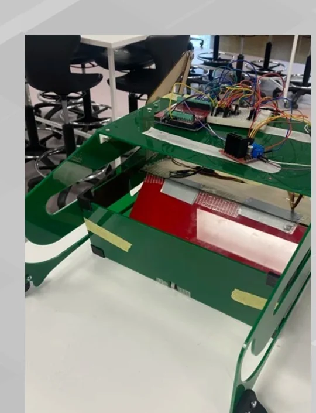
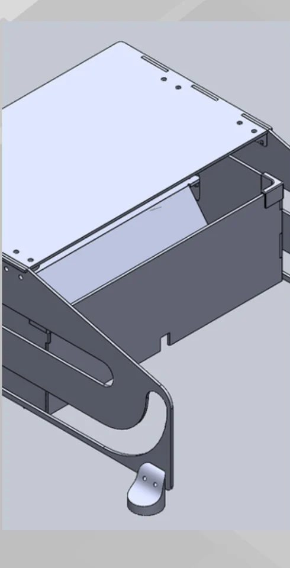
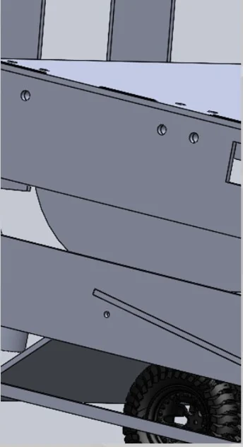

Team design project
Warmandesign and build
A team-based engineering project involving concept development, design, prototyping, testing, and iterative improvement for a competition-based design challenge.

- Type
- Team design and build project
- Setting
- Competition-based design challenge
- Focus
- Concepts, prototyping, testing, iteration
Overview
This project involved contributing to the design and development of a competition-based engineering solution. I worked through design ideas, practical decisions, concept testing, and refinement of the solution through iteration. Compared with my internship project, this one highlights a more hands-on and team-based side of my engineering development.
The project required practical design thinking, communication, and working toward a functioning outcome under project constraints.



Skills
Reflection
I chose this project because it shows a different but equally important side of my engineering development. While my internship project demonstrates technical analysis, this project shows how I apply engineering thinking in a practical, collaborative, and design-focused setting.
Through this experience, I had to contribute ideas, work through design challenges, and help move the project from concept toward a real outcome. It is meaningful to me because it reflects the reality that engineering is not only about calculations and analysis, but also about making decisions, adapting to problems, and working with others to improve a design.